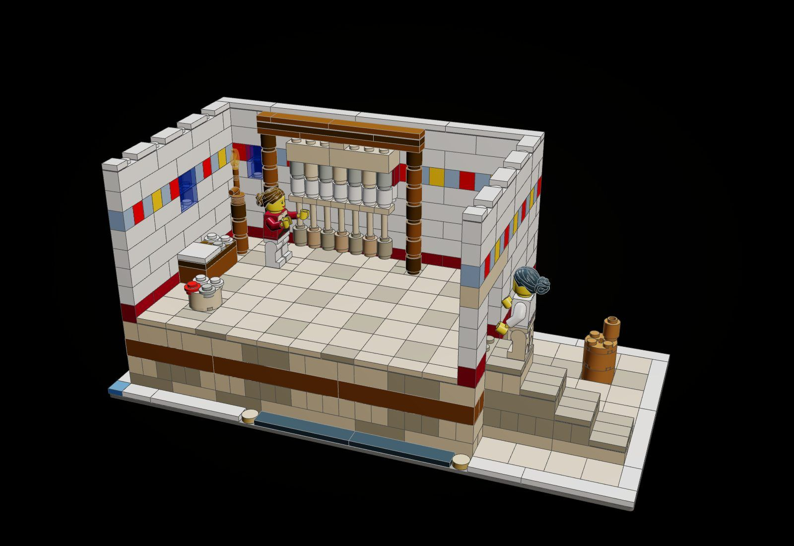
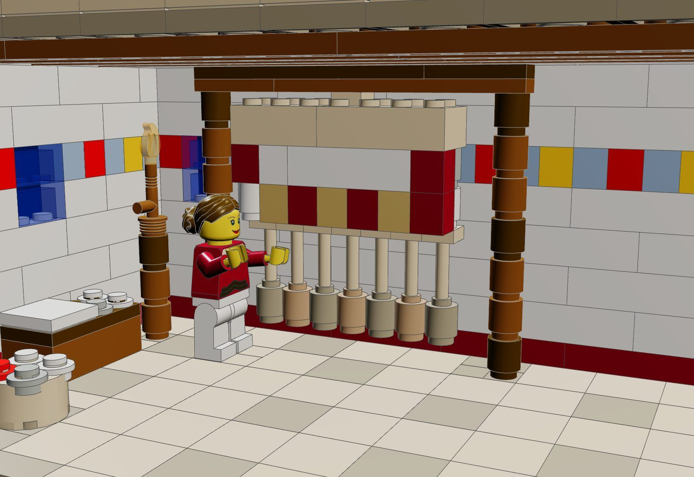
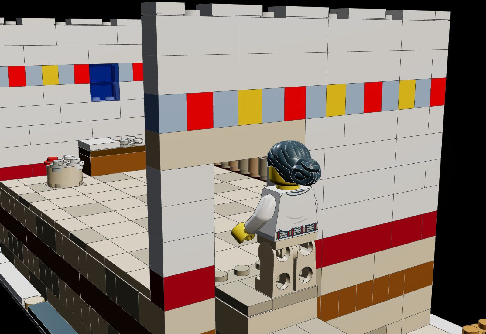
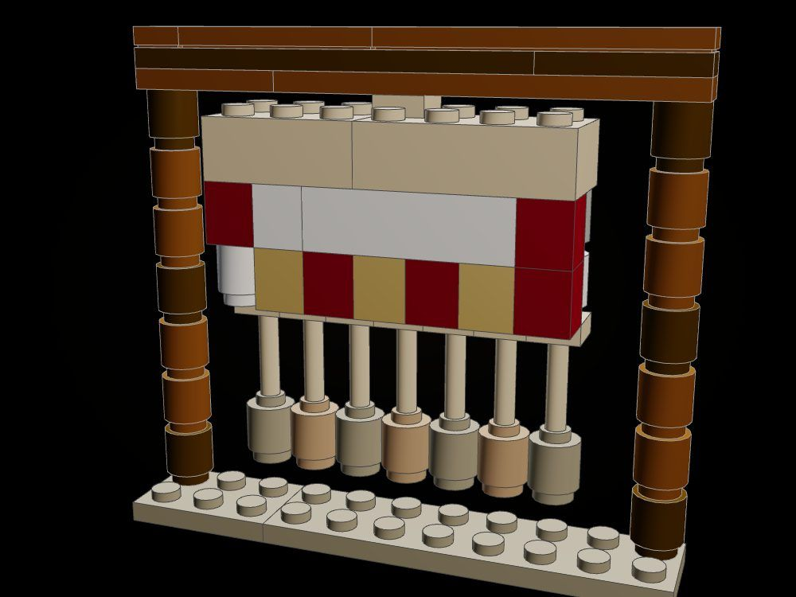
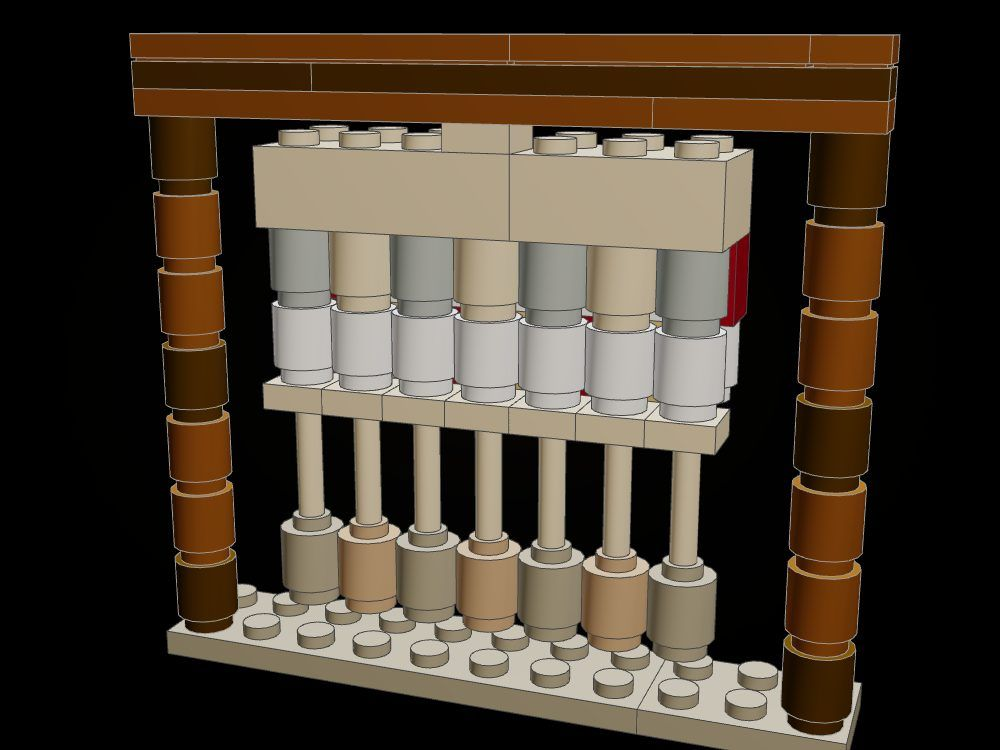
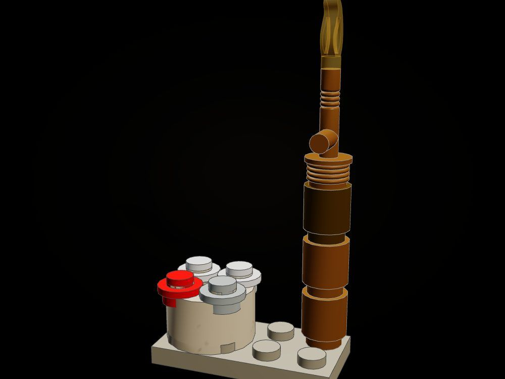

Penelope's Loom
Night in the upper chamber: by torchlight Penelope unpicks the web she wove by day, while a maid at the door at the head of the stair watches her, the maid who will tell the suitors.
So we could see her working on her great web all day long, but at night she would unpick the stitches again by torchlight. (Odyssey II, tr. Samuel Butler)

The object
The shroud on a warp-weighted loom: two uprights, the cloth-beam across them, and the shroud hung from the beam on a single stud, so it turns: one face the woven linen with its red and gold border, the other the loose warp she has undone. The warp runs down on bars to a row of clay loom-weights that hang free above the floor. The roof lifts off.






How it is built
- The shroud is two rows of bricks hung from a single 1 x 1 plate under the cloth-beam: it turns on that one stud, the woven row (a white field, red edges, a border of dark red and pearl gold) on one side and the warp row (round bricks in white, tan and grey) on the other.
- The warp runs down from the shroud on bars to seven clay loom-weights (round bricks in dark tan and medium nougat) that hang free a plate above the floor.
- The room is raised on a hollow storey of stone sculpted and settled with tools/forage/product/sculpt.py, a course of timber laced through it; a stone stair of four bonded steps climbs from the court to the landing at the door.
- Plastered walls in running bond with a painted dado and a fresco band of blue, red and ochre; two windows glazed in trans dark blue for the night outside.
- The roof is a separate assembly of beams, a deck laid so its joints cross the beams' joints, and tiles: it lifts off whole.
- Floors and treads are tiles; studs are left only where someone or something stands.
The builds inside the build
The loom with its shroud
The uprights, the cloth-beam, the turning shroud, the warp and the weights, on a slab of floor.
The torch and the wool basket
The torch in its stand of round bricks, its flame pinned in the head, beside a basket of carded wool.
What the checker says
| Build | File | Pieces | Loose | Clashes |
|---|---|---|---|---|
| Penelope's Loom | set.penelopes-loom | 762 | 0 | 0 |
| The roof lifted off, the shroud turned to its undone face | set.penelopes-loom-open | 678 | 0 | 0 |
| The loom with its shroud | set.penelopes-loom-loom | 72 | 0 | 0 |
| The torch and the wool basket | set.penelopes-loom-torch | 11 | 0 | 0 |
In the film

Still to do
- The loom-weights are held by their bars, which the checker does not see, so they are marked as their own anchor (kitlib.root); the bars and the flame pin are placed by hand.
- The uprights stand vertical; a real warp-weighted loom leans against the wall.
- The -open card shows two changes at once (roof off, shroud turned); a separate card for each state would be clearer.
- Penelope reaches toward the web but holds no thread; the maid is seen mostly from behind.
- The props.json looms (loomFull, loomHalf) were inspected and not used: their web is a fixed stack of 1 x 6 bricks and does not turn.